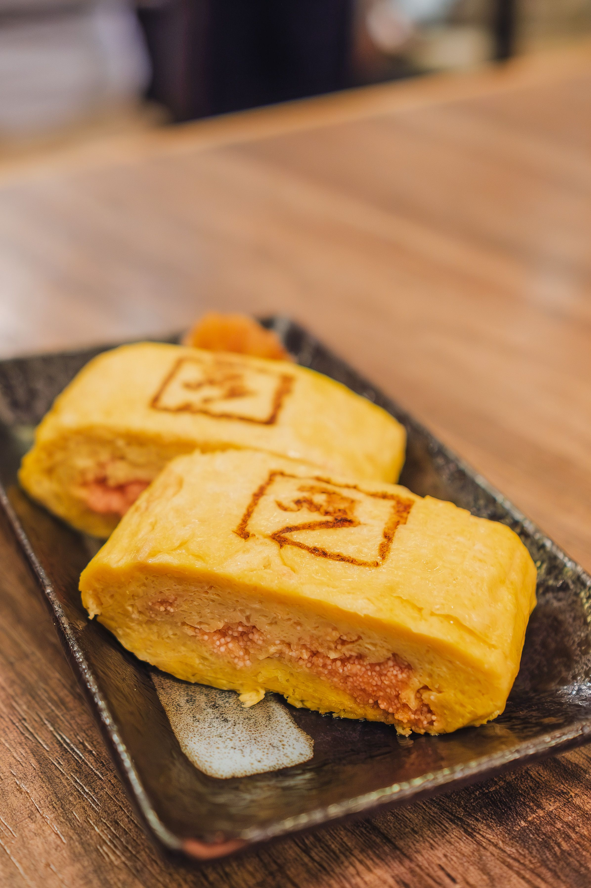

Tamagoyaki

Description
This is a recipe of making Tamagoyaki.
Ingredients
- 4 large eggs
- 1 tablespoons sugar
- 1 tablespoon soy sauce
- 1 tablespoon mirin (sweet rice wine)
- 1/4 teaspoon salt
- Vegetable oil for cooking
Steps
-
In a bowl, whisk together the eggs, sugar, soy sauce, mirin, and salt
until well combined.
-
Heat a rectangular or square tamagoyaki pan over medium heat and lightly
oil it using a paper towel.
-
Pour a thin layer of the egg mixture into the pan, tilting it to cover
the bottom. Cook until the edges are set but the surface is still
slightly runny.
-
Using chopsticks or a spatula, carefully roll the cooked egg layer
towards you, leaving a small portion unrolled at the far end of the pan.
-
Push the rolled egg to the far end of the pan, and lightly oil the
exposed part of the pan again.
-
Pour another thin layer of egg mixture into the pan, lifting the rolled
egg to let the uncooked egg flow underneath. Cook until set, then roll
the egg again towards you.
-
Repeat this process until all the egg mixture is used, creating multiple
layers of rolled egg.
- Serve immediately and enjoy!
Home